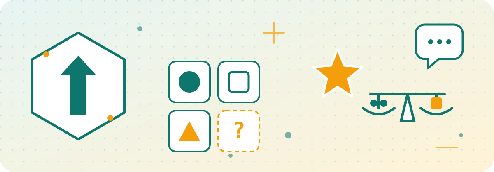

LAB NOTE · 자기평가 실험실
두뇌실험실 — 나를 측정하는 네 가지 실험
무료, 로그인 없음, 결과는 내 브라우저에만 저장됩니다. 문항은 직접 만들었거나 공개된 문항을 옮긴 것이며, 도형·수열 문항은 매번 새로 생성됩니다.
- 인지 능력 검사 — 도형 행렬, 도형 유추, 수열, 저울 추론, 언어 유추, 어휘, 논리, 공통점 찾기, 도형 회전, 숫자·위치·순서 기억, 반응 속도, 기호 찾기까지 18개 과제. 1~6단계 적응형 진행, 결과는 추정 IQ(평균 100, 표준편차 15).
- 정서 지능 검사 — 감정 인식·활용·이해·조절 네 영역, 여덟 가지 세부 능력, 상황 판단 24문항.
- 성격 검사 — 빅파이브 다섯 요인과 열다섯 세부 특성, 45문항.
- 연애 애착 유형 검사 — 불안·회피 두 축과 여섯 세부 패턴으로 안정형, 불안 몰입형, 회피 독립형, 혼란 양가형을 알아봅니다.